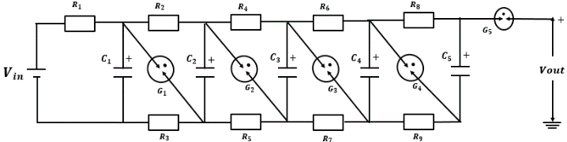
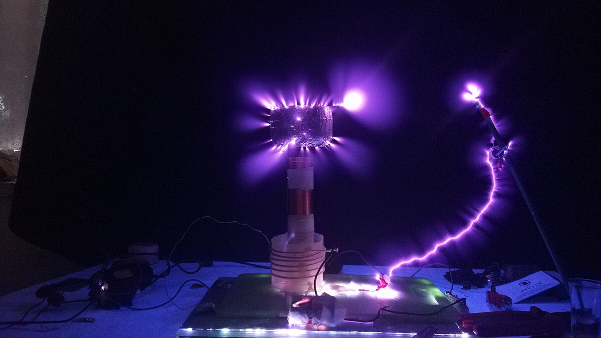

This section explores the principles of high voltage systems used in power transmission, insulation design, testing, and protection.
1️⃣ Breakdown Mechanisms
Gaseous Breakdown: Townsend avalanche and streamer theory
Liquid Breakdown: Bubble and cavitation-based models
Solid Breakdown: Thermal and electrochemical aging effects
⚙️ 2. Generation of High Voltages
AC Generation: Cascaded transformers
DC Generation: Cockcroft-Walton multiplier
Impulse Generation: Marx Generator

🔍 3. Measurement of High Voltage
Electrostatic Voltmeter: For steady-state DC
Sphere Gap: For peak value of impulse voltage
Voltage Divider: Resistor or capacitive divider for measurement
🌩 4. Impulse Testing
Simulates lightning or switching surges. Standard wave: 1.2/50 µs impulse.
Above is a simulated 1.2/50 µs lightning impulse voltage waveform.
🧪 5. Insulation Systems
Air, SF₆, and oil insulation for switchgear and transformers
Composite polymer insulators for overhead lines
💡 6. Partial Discharge and Corona
Occurs in weak insulation zones. PD detection helps assess aging and insulation strength. Corona losses affect power quality and are visible in high humidity conditions.

⚠️ 7. Safety & Shielding
Faraday cage protection
Grounding and insulation coordination
Safe design margins for labs and substations
📘 Practice Questions
Q1: Why use Marx Generator in impulse testing?
Answer: It allows generation of high-voltage short-duration pulses simulating lightning conditions.
Q2: What causes corona discharge?
Answer: Ionization of air around high voltage conductors due to strong electric fields.
Q3: Name a standard impulse waveform used for testing?